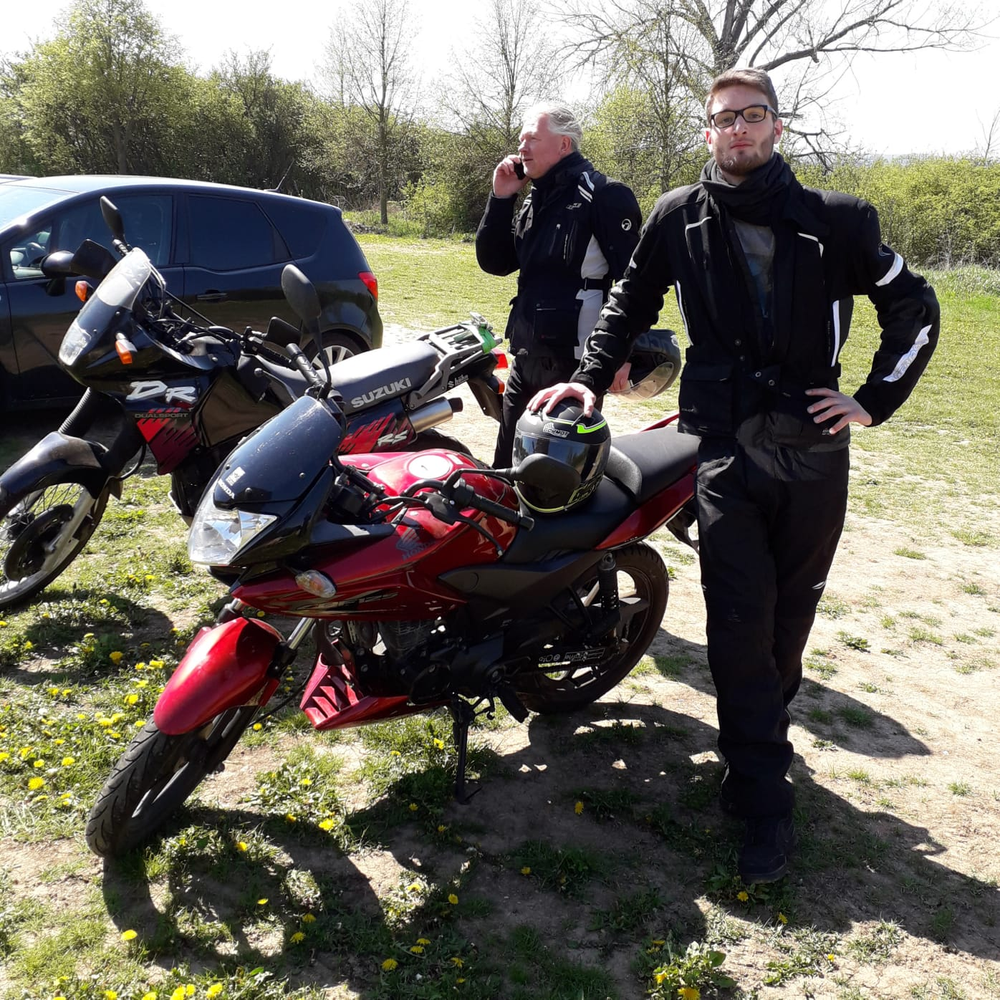

Mein erstes Motorrad, eine Honda CBF 125, habe ich von meiner Schwester bekommen, nachdem diese sich ein neues
geholt hat.
Ich habs geschenkt bekommen also kann ich mich nicht beschweren...mehr kann ich zu der Maschine nicht sagen.

Mein zweites Motorrad, obwohl es eigentlich das erste richtige Motorrad war. Eine Suzuki DR 650 RSE, mit Baujahr
1993 damals schon fast ein Oldtimer.
Trotzdem ein absolut geniales Teil das mega viel Spass macht, wenn der Oelverlust nicht so gross waere.